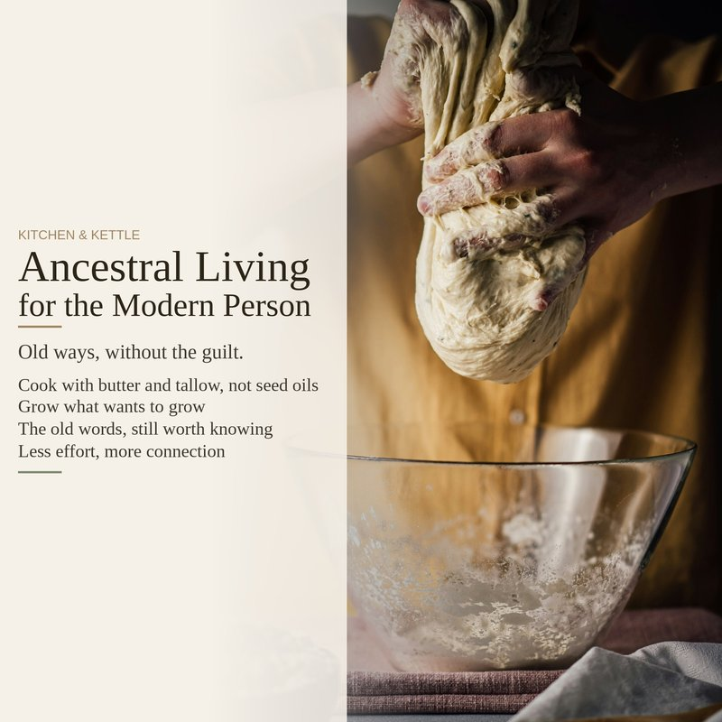

If you walked into a kitchen two hundred years ago, you'd find butter, lard, and tallow. That was it. No canola oil. No soybean oil. No margarine. Just animal fats — the same thing humans had cooked with for thousands of years.
Industrial seed oils didn't exist until the last century. They were invented in factories, not kitchens. Cottonseed oil was originally a waste product from cotton processing until someone figured out how to refine it into something that looked like food. Soybean oil took off after World War II when the US had a surplus of soybeans and needed a market for them. Canola oil comes from rapeseed, which was bred in Canada in the 1970s to reduce a toxic compound called erucic acid — the original rapeseed oil was used as an industrial lubricant, not a cooking fat. These are not heritage ingredients. They're industrial products that found their way into our kitchens through marketing, not tradition.
Butter and tallow are different. They come from animals, not factories. They're made by separating cream from milk or by rendering fat from beef — processes your great-great-grandmother would recognize. They taste better. They handle high heat without breaking down into compounds that smell like a chemical fire. And they come from a source that your body has been processing for millennia. If you do nothing else in your kitchen, swap your cooking fat. Whatever you're cooking right now — roast vegetables, scrambled eggs, a pan of cornbread — use butter or tallow instead of vegetable oil. It will taste better, and you'll be cooking with something that was food before a factory got involved.
What your ancestors cooked with
The shift from animal fats to seed oils happened fast. In 1900, nearly all cooking fat in American kitchens was butter, lard, or tallow. By 1950, Crisco — hydrogenated cottonseed oil — was in half the pantries in the country. By 2000, soybean oil alone accounted for more than half of all vegetable oil consumption. That's three generations. Your great-grandmother might have been the one who made the switch. Her mother didn't. Her grandmother definitely didn't.
This timeline matters because it's easy to assume that if something is in every grocery store, it must be traditional. It isn't. Seed oils are newer than electricity. They're newer than cars. They're newer than the lightbulb. The entire category of "vegetable oil" as a cooking fat is a twentieth-century invention. Everything before that — all of human culinary history — ran on animal fats and, in some regions, olive oil or coconut oil. That's it.
The practical case
You don't need to be convinced by ancestral arguments. The practical case for butter and tallow stands on its own:
Heat stability. Animal fats are mostly saturated and monounsaturated — the two types of fat that stay stable at high temperatures. Seed oils are high in polyunsaturated fats, which oxidize easily when heated. That's why a cast iron pan seasoned with flaxseed oil flakes off, and why a kitchen that's been deep-frying in soybean oil smells like a fast food parking lot. Butter and tallow don't break down the same way. They hold up.
Taste. This one is straightforward. Roast potatoes in tallow once and you will never go back. Scrambled eggs cooked in butter taste richer, fuller, more like themselves. A pie crust made with butter flakes into layers that shortening can't touch. Seed oils taste like nothing — which sounds like a selling point until you realize that food should taste like something.
Ingredient lists. Butter has one ingredient. Tallow has one ingredient. Canola oil, even the cold-pressed kind, goes through degumming, bleaching, and deodorizing before it reaches the bottle. Those are industrial processes, not cooking techniques. If you prefer your food to come from kitchens rather than factories, your choice of fat is the easiest place to start.
What's in the full guide
Cooking with traditional fats is one section of Ancestral Living for the Modern Person — a guide about knowing what's worth your effort and what never was. The full guide covers building a daily food foundation, sauerkraut and sourdough step by step, growing the two crops anyone can start with, what to make versus what to buy for body and household, Old Norse phrases and ancestral healing, and the handful of old ways that actually earn their place in a modern life. No soap recipes. No grinding flour. No guilt.
The full 15-page guide includes complete sauerkraut and sourdough instructions, a daily food foundation, grow-something starter guide, and more.
Ancestral Living for the Modern Person on Etsy →